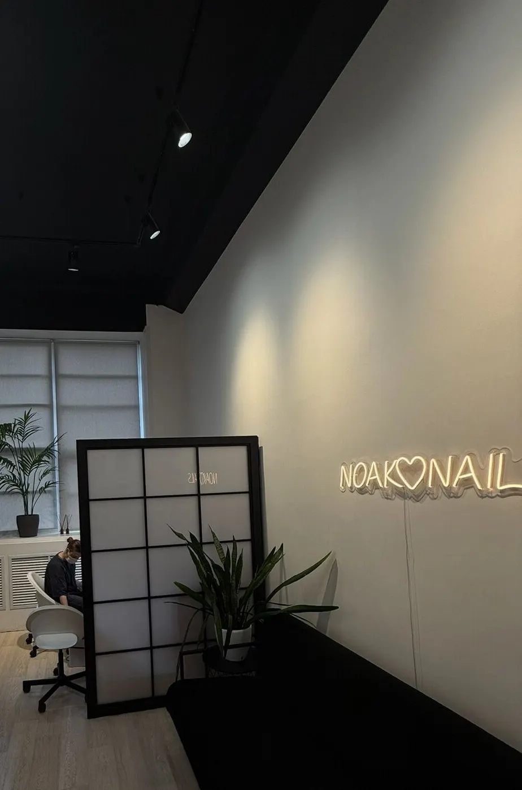
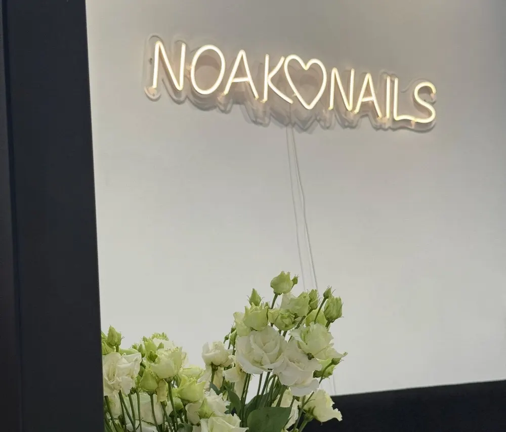
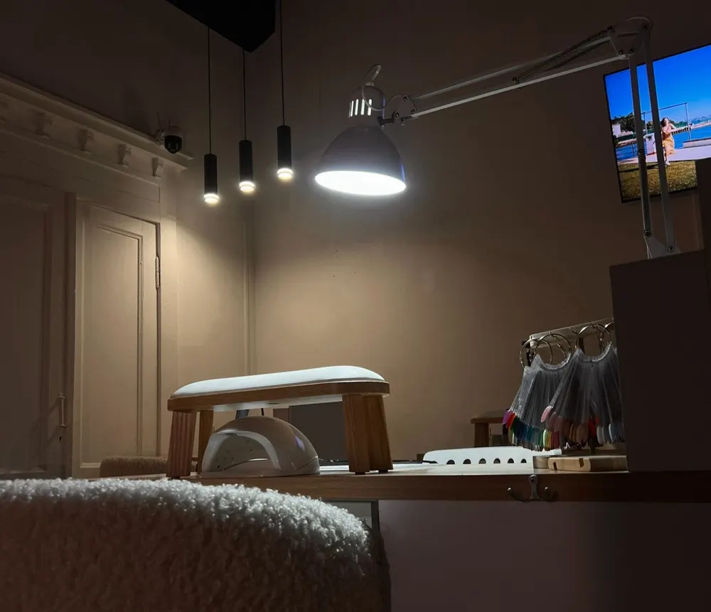
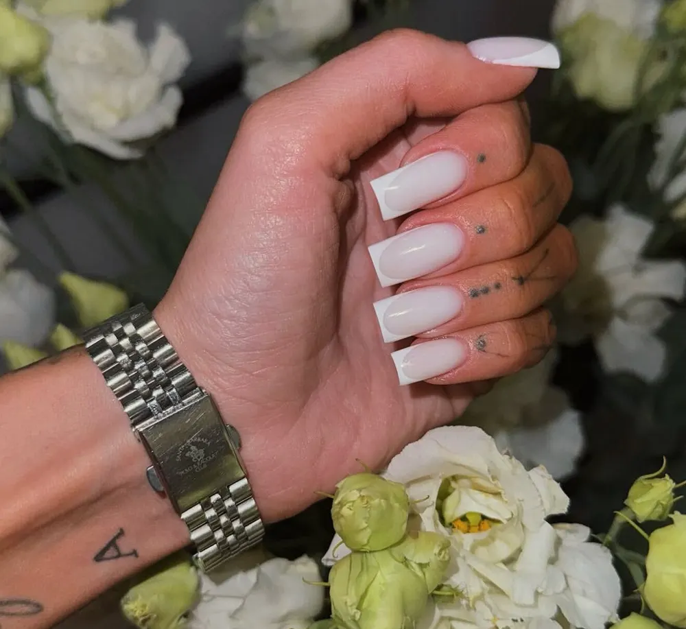

Ногтевая студия · Советская, 18, офис 333
Маникюр и педикюр в белой студии на Советской
Аппаратный маникюр, покрытие с выравниванием, наращивание и дизайн. Педикюр в отдельной зоне. Можно прийти с кошкой или собакой.
- Маникюр, педикюр, наращивание
- Рейтинг 4,8, 86 оценок
- Ежедневно 09:00–22:00

Услуги и цены
Цен на карточке нет – стоимость назовёт администратор при записи
Маникюр
- Маникюр с покрытием и снятиемпо запросу
- Маникюр без покрытияпо запросу
- Укрепление и наращиваниепо запросу
- Дизайнпо запросу
Педикюр
- Педикюр с покрытиемпо запросу
- Обработка пальчиковпо запросу
Оплата картой. Студия на третьем этаже, офис 333.
Как записаться
- 01
Выбираете услугу, день и время
В форме наверху страницы – сообщение уйдёт в WhatsApp.
- 02
Студия подтверждает время
Если окно занято, предложат ближайшее.
- 03
Приходите: Советская улица, 18, офис 333, этаж 3
Ежедневно 09:00–22:00.



За что хвалят в отзывах
Без порезов
Об аппаратном маникюре: «без порезов, без заусенцев, все быстро и аккуратно».
Своя форма ногтей
Клиентки пишут, что здесь наконец нашли «свою» форму и мастера.
Маникюр за 1,5 часа
«Идеальный маникюр за 1.5 часа» – из отзыва Анастасии.
Можно с питомцем
Разрешено с кошками и собаками.
Отзывы с Яндекс.Карт
«Долго пыталась найти именно такое место.»
Анастасия Г. · 3 октября 2025
«Была на маникюре у мастера Надя и наконец-то нашла своего мастера!!»
Надюша · 7 августа 2025
«Огромное спасибо мастеру Анастасии, очень аккуратный маникюр и педикюр у нас получился. Самое главное быстро и качественно 💅🏻»
Анна Семибратова · 22 июня
Отзывы с карточки на Яндекс.Картах, без правок.
Частые вопросы
Сколько стоит маникюр?
Цены назовёт администратор при записи: на карточке их пока нет.
Можно прийти с собакой?
Да, студия разрешает посещение с кошками и собаками.
Как найти студию?
Советская, 18, третий этаж, офис 333 – на двери неоновая вывеска.
Во сколько работаете?
Ежедневно с 09:00 до 22:00.
Выберите время в Noak Nails
- Адрес
- Советская улица, 18, офис 333, этаж 3, Новосибирск
- Часы
- Ежедневно 09:00–22:00
- Телефон
- +7 (996) 379-63-68